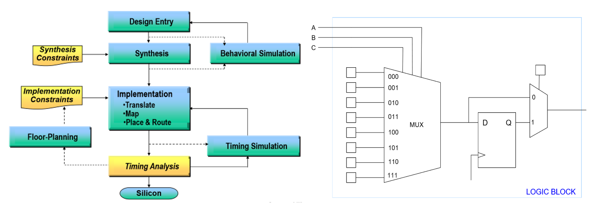
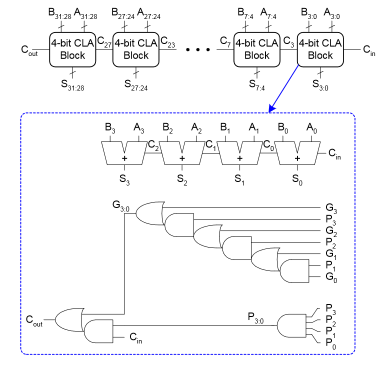

Hardware Reference¶
ASIC vs FPGA vs Processor¶
| ASIC | FPGA | Processor | |
|---|---|---|---|
| Performance | High | Medium | Low |
| Power Consumption | Low | Medium | High |
| Flexibility | None | Somewhat | General purpose |
| Design Process | Difficult, long | Medium | Easy, quick (software) |
| Cost | Cheaper for large volumes | Cheaper for small volumes | Cheapest (mass-produced) |
FPGA Design Process¶

- Synthesis: break logic into LUTs
- A \(n\)-input LUT can make any \(n\)-input function, combinational or sequential
- Mapping/placing: place LUTs into CLBs such that
- Connected LUTs are close to each other
- Critical path is approximately minimized
- Routing: connecting logic blocks together
- Uses programmable switches: NMOS acts as conductor when the configuration bit (part of bitstream) is 1, connecting the tracks
- Connects CLBs with segments of varying lengths
- Shorter segments minimize delay, noise, and crosstalk
- Longer segments have extra capacitance and limited quantity, but minimize the number of segments needed
- Timing analysis: looks for timing violations
- Path delay is sum of all logic and wire delays
Memory¶
- Types: DRAM (volatile, capacitor), SRAM (nonvolatile, cross-coupled inverter), ROM (nonvolatile)
Caches¶
- Offer temporal (recently accessed in cache), and spatial (multi-word blocks) locality
- Instructions tend to be more spatial, data could be both
- To better support temporal: decrease block size and number of sets, or increase associativity
- Block size: number of bytes per cache line
- Associativity: number of cache lines per set
- Memory mountains
- Temporal: levels, based on which level of cache can fully contain the working set
- Spatial: throughput decreases with increasing stride length until stride length ≥ block size
- Amdahl's law: speedup = \(\frac{1}{(1-a) + \frac{a}{k}}\), where \(a\) is the percentage of code sped up by \(k\) times
- Increasing associativity decreases conflict misses, but decreases performance (specifically lookup and replacement times)
- Write through is good for synchronization, write back is faster when modifying same cache line multiple times
Power Dissipation¶
Types of Power Dissipation¶
Dynamic: every time a node is switched from 0 to 1 or 1 to 0, some power is dissipated
- \(\alpha\) is the activity factor: probability a node will switch
- \(f\) is the frequency
- \(C\) is the capacitance
- \(V\) is the voltage
Static: every transistor on the chip leaks, even when it is not doing anything
Power Dissipation vs Transistor Size¶
As digital circuits shrink (and chip voltages decrease):
- Dynamic power decreases: \(V\) and \(C\) decrease in dynamic power equation
- Static power increases: leakage current increases
Reducing Power Dissipation¶
- Custom chip
- Turn off regions that are unused to reduce static power (dark silicon)
- Multiple threshold libraries
- FPGA
- Minimize area (less leakage, may allow for smaller FPGA)
- General
- Lower voltage
- Revise implementation (add instead of multiply, invert bus)
- Pipelining: adding flip flops prevents glitches from propagating, which reduces glitch power
- Disadvantage: flip flops use power, which places extra burden on the clock tree
Timing¶
Gate Delay¶
- Every wire and transistor has parasitic capacitance (physical property)
- Delay of logic gate is the time it takes to charge the capacitance on its output,
which is the net capacitance of the parasitic capacitances of the wires and transistors
- Proportional to \(RC\) (\(nRC\) for \(n\) gates, where \(n\) is the number of gates in the path)
- \(R\) depends on size of logic gate transistor (bigger → lower \(R\)) and length of wire (longer → higher \(R\))
- \(C\) depends on the same things in the same ways as \(R\), but also depends on fanout (larger fanout → higher \(C\))
- Fanout: number of inputs driven by an output
- Reduce fanout by splitting net, but this increases the number of gates
- Fanout: number of inputs driven by an output
- Proportional to \(RC\) (\(nRC\) for \(n\) gates, where \(n\) is the number of gates in the path)
Modelling Delays¶
Setup Time¶
How long input needs to be stable before clock edge to be accepted.
- Setup violation causes metastability
- Fix by slowing down clock or moving registers around to reduce length of critical path
- For example, pipelining, which is best when critical path is much longer than other paths)
- Fix by slowing down clock or moving registers around to reduce length of critical path
Hold Time¶
How long input needs to be stable after clock edge to be accepted.
- Hold time violation causes data loss
- Could be caused by clock skew
- Fix by increasing gate/DFF delays or adding buffers to data path or earlier clock paths
- Cannot be fixed by increasing clock period
Glitches¶
- Glitch: undesired short-lived pulse that occurs before a signal settles to its intended value
- Caused by unequal arrival times of inputs on combinational gates + same output is generated by different values of state bits
- Ex 1: XORing the bits 01 → 0, transitioning to 11 or 00 → 1, before settling at 10
- Ex 2: clock gating incorrectly such that the output of the AND gate (enable) glitches
- Clock gating is used to reduce dynamic power
- Any transition consumes power, so unnecessary transitions consume unnecessary power
Glitches in FSMs¶
Effects
- Edges triggered inputs (i.e. clocks) may be falsely triggered
- Enables may glitch before being sampled, causing garbage to be read
- Hard to detect
Avoiding glitches
- Try to make it so that only 1 input bit changes at a time
- Register next outputs
- Quick fix, but adds one cycle delay, does not support direct dependence of outputs on inputs, requires extra registers
- Eliminate combinational logic after state machine
- Move before current state machine or next state machine
- Require outputs to either be:
- Driven from a state bit or its complement
- Driven by (simple) combinatorial logic that depends on a single state bit
- Safest for signals that are constant for the duration of the state machine's operation
Clock Domain Crossings¶
- Clock domain: all DFFs in each clock domain run on the same clock
- Signals that cross clock domains will likely cause timing violations
- Asynchronous signals also cause timing violations in a similar manner
- On a timing violation, output may get the right value, wrong value, or become metastable (value between 0 and 1 that resolves randomly)
- May cause system-wide failure
Metastability¶
If the time it takes for a metastable node to resolve is greater than setup slack (negative slack), then system-wide failure occurs.
- Quantitately measure with MTBF: average time between two failure-causing instances of metastability
- Increases exponentially with slack
- Maximize by synchronizing asynchronous inputs
Slack¶
Time when it actually happens vs when it must happen (positive slack is when it happens before must).
- Setup: \(T_{\text{required}} - T_{\text{arrival}}\)
- Hold: \(T_{\text{arrival}} - T_{\text{required}}\)
- \(T_{\text{required}}\): clock path
- Reg2reg and input2reg: \(T_{clk} + T_{setup}\)
- Reg2output: unconstrained
- \(T_{\text{arrival}}\): data path
- Reg2reg and reg2output: \(T_{clk2q} + T_{combinational}\)
- Input to reg: \(T_{combinational}\)
Reference: Setup and hold slack
Practical Issues¶
- Retiming in pipelining: move combinational logic from one side of DFF to another to balance the critical path length of each stage
- Clock skew: clock edge arrives at different components at different times (might be due to the difference in path lengths)
- Implications
- change in \(F_{max}\): changes setup time
- Failure of design: hold time violations and functional problems losing current value because second clock arrives too late
- Fix using
- Buffers
- H-tree network (route so that same distance to each flop)
- Global clocks that have dedicated routing to minimize clock skew; however, limited availability
- Implications
- PLLs: mixed signal circuit that generates output clocks aligned to an input clock
- Motivation: usually there is clock skew between the input and output clocks of a clock divider/multiplier, and routing a generated clock is unpredictable
- Can even generate output clocks with the same phase as input clock
Arithmetic Circuits¶
Adders¶
1-bit adders¶
- Half adder: two 1-bit inputs, 2-bit output
- Full adder: half adder + carry in and out
Multi-bit adders¶
There are several types of carry propagate adders:
Ripple-carry (slow): chain of full adders that bitwise add N-bit inputs
- Delay: \(t_{ripple} \approx Nt_{FA}\), where \(t_{FA}\) is the delay of a full adder
- Proportional to N
- FPGAs are optimized for ripple carry adders, so faster than other implementations when \(N ≤ 16\)
Carry select (less slow): calculate higher-order bits for both cases of carry-in, then select correct case when carry in is available
- Requires more hardware, but slightly faster than ripple-carry adders
Carry-lookahead (fast): compute carry out for \(k\)-bit blocks using generate and propagate signals
- \(G_i = A_iB_i\)
- \(G_{3:0} = G_3+P_3(G_2+P_2(G_1+P_1G_0))\)
- \(P_i = A_i+B_i\)
- \(P_{3:0} = P_3P_2P_1P_0\)
- \(C_{out} = G_{in} + P_{in}C_{in}\)
- Delay of 4-bit adder: \(4 t_{PD}\), where \(t_{PD}\) is the delay of a single AND/OR gate
- All \(G,P\) terms available in \(t_{PD}\)
- \(C\) terms (sum of products) available in \(2t_{PD}\)
- Results from full adder (sum, no carry out) available in \(t_{PD}\)
-
Not very scalable, so typical to make a N-bit CLA out of smaller \(k\)-bit CLAs
- Delay: \(t_{CLA} = t_{pg} + t_{pg\_block} + \frac{N}{k-1}t_{AND\_OR} + kt_{FA}\)
- \(t_{pg}\): delay to generate all \(G_i,P_i\)
- \(t_{pg\_block}\): delay to generate all \(G_{i:j},P_{i:j}\) for every \(k\)-bit CLA
- \(t_{AND\_OR}\): delay from \(C_{in}\) to \(C_{out}\) of the final AND/OR gate in a \(k\)-bit CLA
- \(t_{CLA} = 4\log_4(N)t_{PD}\)
- Proportional to \(\log N\)

- Delay: \(t_{CLA} = t_{pg} + t_{pg\_block} + \frac{N}{k-1}t_{AND\_OR} + kt_{FA}\)
Miscellaneous Arithmetic Circuits¶
- Subtractor: take two's complement of second input
- Equality comparator: AND all the bitwise XORs
- Less than comparator: subtractor; last (sign) bit is 1 when A < B
- Shift less than: all 0's, except LSB is result of less than comparator (A < B)
- Shifters: arithmetic shifters (
<<<>>>) are the same as logical shifters (<<>>) except the right arithmetic shift is sign extended - Division: most complex, always use multi-cycle dividers in practice
Multipliers¶
Multiplication is a complex operation: avoid if possible
- Add instead of multiply: \(7 \times 2 \rightarrow 7 + 7\)
- Shift instead of multiply for powers of 2: \(7 \times 2 \rightarrow 7 << 2\)
1-bit x N-bit: AND operation
N-bit x N-bit: sum of shifted 1-bit x N-bit for each bit in the second term (long multiplication method)
Large multiplier: constructed out of smaller N-bit x N-bit multipliers
-
Let \(A\) be a \(2N\)-bit number, with \(A_H\) being the upper N bits and \(A_L\) being the lower N bits. Let \(B,B_H,B_L\) be defined a similar matter. Therefore,
\[ \displaylines{A = A_{2N-1}A_{2N-2}...A_0 = A_H \times 2^N + A_L \\ B = B_{2N-1}B_{2N-2}...B_0 = B_H \times 2^N + B_L} \]- \(2^N\) shifts left by N bits
-
The product of \(A\) and \(B\) is
\[ A \times B = A_HB_H2^{2N} + (A_HB_L+A_LB_H)2^N + A_LB_L \]- \(2N\)-bit x \(2N\)-bit produces a \(4N\)-bit result
Signed multipliers subtract last number (two's complement) rather than add it
Serial (multi-cycle) multiplier:
Decimal Numbers¶
Fixed Point¶
Like decimal numbers but base 2. For example,
- N-bit representation has \(M\) integer bits (left of decimal point) and \(N-M\) fraction bits (right of decimal point)
- Arithmetic operations: align decimal then perform as usual
- Multiplication and division result in loss of precision
Floating Point¶
Binary scientific notation:
The floating point representation saves the sign, biased exponent, and mantissa fields of the number in binary scientific notation
- IEEE 754 single-precision (32-bits): 1 sign bit, 8 biased exponent bits, 23 mantissa bits
- IEEE 754 double-precision (64-bits): 1 sign bit, 11 biased exponent bits, 52 mantissa bits
- Bias exponent to be positive to circumvent the need for a signed exponent field
- Bias is 127 for single-precision and 1023 for double-precision
- Range
- Largest positive: exponent is all 1s except LSB, mantissa is all 1s
- Smallest positive: exponent is all 0s except LSB, mantissa is all 0s
-
Special cases
- Subnormal (smaller than what is normally possible): exponent all 0s, mantissa is interpreted as being preceded by 0
- Smallest positive: mantissa is all 0's except the LSB
Number Sign Biased Exponent Mantissa 0 X 00000000 00000000000000000000000 \(\infty\) 0 11111111 00000000000000000000000 \(-\infty\) 1 11111111 00000000000000000000000 NaN X 11111111 non-zero - Subnormal (smaller than what is normally possible): exponent all 0s, mantissa is interpreted as being preceded by 0
Example: write \(-58.25_{10}\) in 32-bit floating point
- Convert decimal to binary: \(58.25_{10} = 111010.01_2\)
- Write in binary scientific notation: \(1.1101001 \times 2^5\)
- Fill in the fields
- Sign bit: \(1\) (negative)
- Biased exponent: \(127 + 5 = 132 = 10000100_2\)
- Mantissa: \(110 1001 0000 0000 0000 0000_2\)
Fixed vs Floating Point¶
- Fixed: simpler circuitry, smaller, less power consumption, cheaper
- Floating point: higher dynamic range of representable values
- Not synthesizable unless explicitly accounted for; useful for simulation
SystemVerilog¶
- Types of modules
- Behavioral: describe what module does (gate level)
- Structural: describe how it is built from simpler modules (instantiates other modules)
- Unlike regular Verilog, SystemVerilog supports OOP and generate statements
- Generate statements are for readability; they don’t change hardware implementation